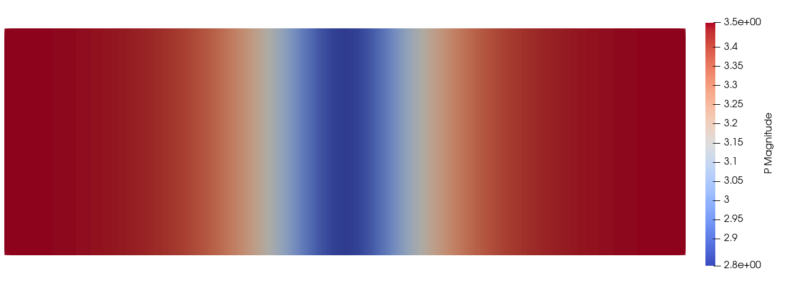
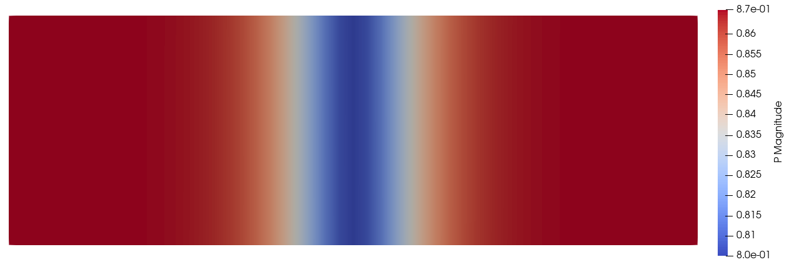

Ginzburg-Landau model energy minimization

Original

Optimized
In this example a basic Ginzburg-Landau model is solved. This example gives an idea of how the API together with ForwardDiff can be leveraged to performantly solve non standard problems on a FEM grid. A large portion of the code is there only for performance reasons, but since this usually really matters and is what takes the most time to optimize, it is included.
The key to using a method like this for minimizing a free energy function directly, rather than the weak form, as is usually done with FEM, is to split up the gradient and Hessian calculations. This means that they are performed for each cell seperately instead of for the grid as a whole.
using ForwardDiff
import ForwardDiff: GradientConfig, HessianConfig, Chunk
using Ferrite
using Optim, LineSearches
using SparseArrays
using Tensors
using Base.ThreadsEnergy terms
4th order Landau free energy
function Fl(P::Vec{3, T}, α::Vec{3}) where T
P2 = Vec{3, T}((P[1]^2, P[2]^2, P[3]^2))
return (α[1] * sum(P2) +
α[2] * (P[1]^4 + P[2]^4 + P[3]^4)) +
α[3] * ((P2[1] * P2[2] + P2[2]*P2[3]) + P2[1]*P2[3])
endFl (generic function with 1 method)Ginzburg free energy
@inline Fg(∇P, G) = 0.5(∇P ⊡ G) ⊡ ∇PFg (generic function with 1 method)GL free energy
F(P, ∇P, params) = Fl(P, params.α) + Fg(∇P, params.G)F (generic function with 1 method)Parameters that characterize the model
struct ModelParams{V, T}
α::V
G::T
endThreadCache
This holds the values that each thread will use during the assembly.
struct ThreadCache{CV, T, DIM, F <: Function, GC <: GradientConfig, HC <: HessianConfig}
cvP ::CV
element_indices ::Vector{Int}
element_dofs ::Vector{T}
element_gradient ::Vector{T}
element_hessian ::Matrix{T}
element_coords ::Vector{Vec{DIM, T}}
element_potential::F
gradconf ::GC
hessconf ::HC
end
function ThreadCache(dpc::Int, nodespercell, cvP::CellValues{DIM, T}, modelparams, elpotential) where {DIM, T}
element_indices = zeros(Int, dpc)
element_dofs = zeros(dpc)
element_gradient = zeros(dpc)
element_hessian = zeros(dpc, dpc)
element_coords = zeros(Vec{DIM, T}, nodespercell)
potfunc = x -> elpotential(x, cvP, modelparams)
gradconf = GradientConfig(potfunc, zeros(dpc), Chunk{12}())
hessconf = HessianConfig(potfunc, zeros(dpc), Chunk{12}())
return ThreadCache(cvP, element_indices, element_dofs, element_gradient, element_hessian, element_coords, potfunc, gradconf, hessconf)
endMain.ThreadCacheThe Model
everything is combined into a model.
mutable struct LandauModel{T, DH <: DofHandler, CH <: ConstraintHandler, TC <: ThreadCache}
dofs ::Vector{T}
dofhandler ::DH
boundaryconds ::CH
threadindices ::Vector{Vector{Int}}
threadcaches ::Vector{TC}
end
function LandauModel(α, G, gridsize, left::Vec{DIM, T}, right::Vec{DIM, T}, elpotential) where {DIM, T}
grid = generate_grid(Tetrahedron, gridsize, left, right)
questionmark, threadindices = Ferrite.create_coloring(grid)
qr = QuadratureRule{DIM, RefTetrahedron}(2)
cvP = CellVectorValues(qr, Lagrange{DIM, RefTetrahedron, 1}())
dofhandler = DofHandler(grid)
push!(dofhandler, :P, 3)
close!(dofhandler)
dofvector = zeros(ndofs(dofhandler))
startingconditions!(dofvector, dofhandler)
boundaryconds = ConstraintHandler(dofhandler)
#boundary conditions can be added but aren't necessary for optimization
#add!(boundaryconds, Dirichlet(:P, getfaceset(grid, "left"), (x, t) -> [0.0,0.0,0.53], [1,2,3]))
#add!(boundaryconds, Dirichlet(:P, getfaceset(grid, "right"), (x, t) -> [0.0,0.0,-0.53], [1,2,3]))
close!(boundaryconds)
update!(boundaryconds, 0.0)
apply!(dofvector, boundaryconds)
hessian = create_sparsity_pattern(dofhandler)
dpc = ndofs_per_cell(dofhandler)
cpc = length(grid.cells[1].nodes)
caches = [ThreadCache(dpc, cpc, copy(cvP), ModelParams(α, G), elpotential) for t=1:nthreads()]
return LandauModel(dofvector, dofhandler, boundaryconds, threadindices, caches)
endMain.LandauModelutility to quickly save a model
function Ferrite.vtk_save(path, model, dofs=model.dofs)
vtkfile = vtk_grid(path, model.dofhandler)
vtk_point_data(vtkfile, model.dofhandler, dofs)
vtk_save(vtkfile)
endAssembly
This macro defines most of the assembly step, since the structure is the same for the energy, gradient and Hessian calculations.
macro assemble!(innerbody)
esc(quote
dofhandler = model.dofhandler
for indices in model.threadindices
@threads for i in indices
cache = model.threadcaches[threadid()]
eldofs = cache.element_dofs
nodeids = dofhandler.grid.cells[i].nodes
for j=1:length(cache.element_coords)
cache.element_coords[j] = dofhandler.grid.nodes[nodeids[j]].x
end
reinit!(cache.cvP, cache.element_coords)
celldofs!(cache.element_indices, dofhandler, i)
for j=1:length(cache.element_dofs)
eldofs[j] = dofvector[cache.element_indices[j]]
end
$innerbody
end
end
end)
end@assemble! (macro with 1 method)This calculates the total energy calculation of the grid
function F(dofvector::Vector{T}, model) where T
outs = fill(zero(T), nthreads())
@assemble! begin
outs[threadid()] += cache.element_potential(eldofs)
end
return sum(outs)
endF (generic function with 2 methods)The gradient calculation for each dof
function ∇F!(∇f::Vector{T}, dofvector::Vector{T}, model::LandauModel{T}) where T
fill!(∇f, zero(T))
@assemble! begin
ForwardDiff.gradient!(cache.element_gradient, cache.element_potential, eldofs, cache.gradconf)
@inbounds assemble!(∇f, cache.element_indices, cache.element_gradient)
end
end∇F! (generic function with 1 method)The Hessian calculation for the whole grid
function ∇²F!(∇²f::SparseMatrixCSC, dofvector::Vector{T}, model::LandauModel{T}) where T
assemblers = [start_assemble(∇²f) for t=1:nthreads()]
@assemble! begin
ForwardDiff.hessian!(cache.element_hessian, cache.element_potential, eldofs, cache.hessconf)
@inbounds assemble!(assemblers[threadid()], cache.element_indices, cache.element_hessian)
end
end∇²F! (generic function with 1 method)We can also calculate all things in one go!
function calcall(∇²f::SparseMatrixCSC, ∇f::Vector{T}, dofvector::Vector{T}, model::LandauModel{T}) where T
outs = fill(zero(T), nthreads())
fill!(∇f, zero(T))
assemblers = [start_assemble(∇²f, ∇f) for t=1:nthreads()]
@assemble! begin
outs[threadid()] += cache.element_potential(eldofs)
ForwardDiff.hessian!(cache.element_hessian, cache.element_potential, eldofs, cache.hessconf)
ForwardDiff.gradient!(cache.element_gradient, cache.element_potential, eldofs, cache.gradconf)
@inbounds assemble!(assemblers[threadid()], cache.element_indices, cache.element_gradient, cache.element_hessian)
end
return sum(outs)
endcalcall (generic function with 1 method)Minimization
Now everything can be combined to minimize the energy, and find the equilibrium configuration.
function minimize!(model; kwargs...)
dh = model.dofhandler
dofs = model.dofs
∇f = fill(0.0, length(dofs))
∇²f = create_sparsity_pattern(dh)
function g!(storage, x)
∇F!(storage, x, model)
apply_zero!(storage, model.boundaryconds)
end
function h!(storage, x)
∇²F!(storage, x, model)
#apply!(storage, model.boundaryconds)
end
f(x) = F(x, model)
od = TwiceDifferentiable(f, g!, h!, model.dofs, 0.0, ∇f, ∇²f)this way of minimizing is only beneficial when the initial guess is completely off, then a quick couple of ConjuageGradient steps brings us easily closer to the minimum. res = optimize(od, model.dofs, ConjugateGradient(linesearch=BackTracking()), Optim.Options(showtrace=true, showevery=1, g_tol=1e-20, iterations=10)) model.dofs .= res.minimizer to get the final convergence, Newton's method is more ideal since the energy landscape should be almost parabolic
res = optimize(od, model.dofs, Newton(linesearch=BackTracking()), Optim.Options(show_trace=true, show_every=1, g_tol=1e-20))
model.dofs .= res.minimizer
return res
endminimize! (generic function with 1 method)Testing it
This calculates the contribution of each element to the total energy, it is also the function that will be put through ForwardDiff for the gradient and Hessian.
function element_potential(eldofs::AbstractVector{T}, cvP, params) where T
energy = zero(T)
for qp=1:getnquadpoints(cvP)
P = function_value(cvP, qp, eldofs)
∇P = function_gradient(cvP, qp, eldofs)
energy += F(P, ∇P, params) * getdetJdV(cvP, qp)
end
return energy
endelement_potential (generic function with 1 method)now we define some starting conditions
function startingconditions!(dofvector, dofhandler)
for cell in CellIterator(dofhandler)
globaldofs = celldofs(cell)
it = 1
for i=1:3:length(globaldofs)
dofvector[globaldofs[i]] = -2.0
dofvector[globaldofs[i+1]] = 2.0
dofvector[globaldofs[i+2]] = -2.0tanh(cell.coords[it][1]/20)
it += 1
end
end
end
δ(i, j) = i == j ? one(i) : zero(i)
V2T(p11, p12, p44) = Tensor{4, 3}((i,j,k,l) -> p11 * δ(i,j)*δ(k,l)*δ(i,k) + p12*δ(i,j)*δ(k,l)*(1 - δ(i,k)) + p44*δ(i,k)*δ(j,l)*(1 - δ(i,j)))
G = V2T(1.0e2, 0.0, 1.0e2)
α = Vec{3}((-1.0, 1.0, 1.0))
left = Vec{3}((-75.,-25.,-2.))
right = Vec{3}((75.,25.,2.))
model = LandauModel(α, G, (50, 50, 2), left, right, element_potential)
vtk_save("landauorig", model)
@time minimize!(model)
vtk_save("landaufinal", model)1-element Vector{String}:
"landaufinal.vtu"as we can see this runs very quickly even for relatively large gridsizes. The key to get high performance like this is to minimize the allocations inside the threaded loops, ideally to 0.
This page was generated using Literate.jl.